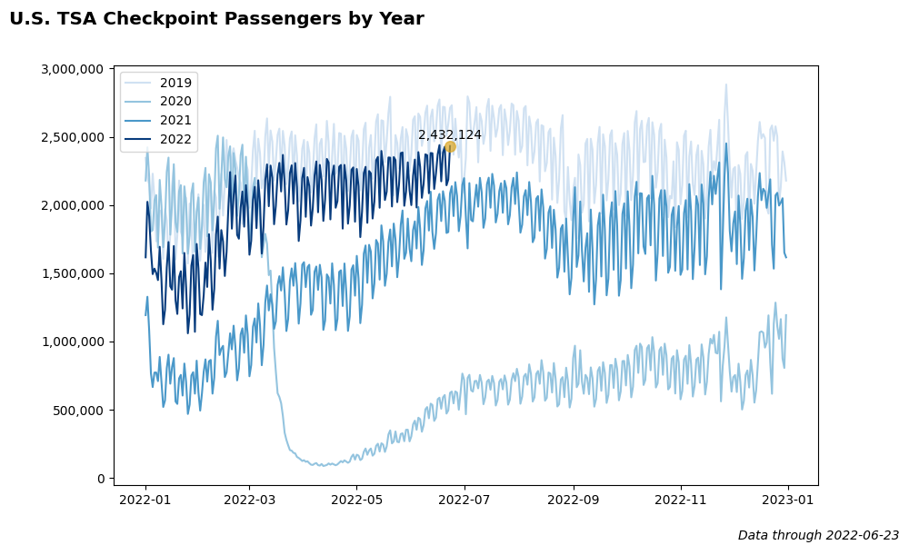
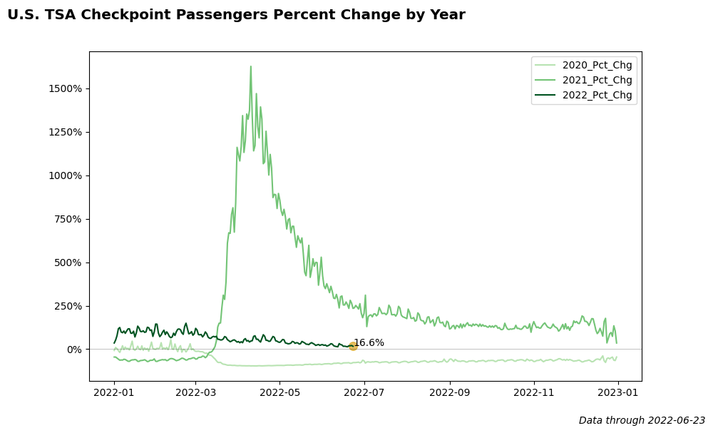
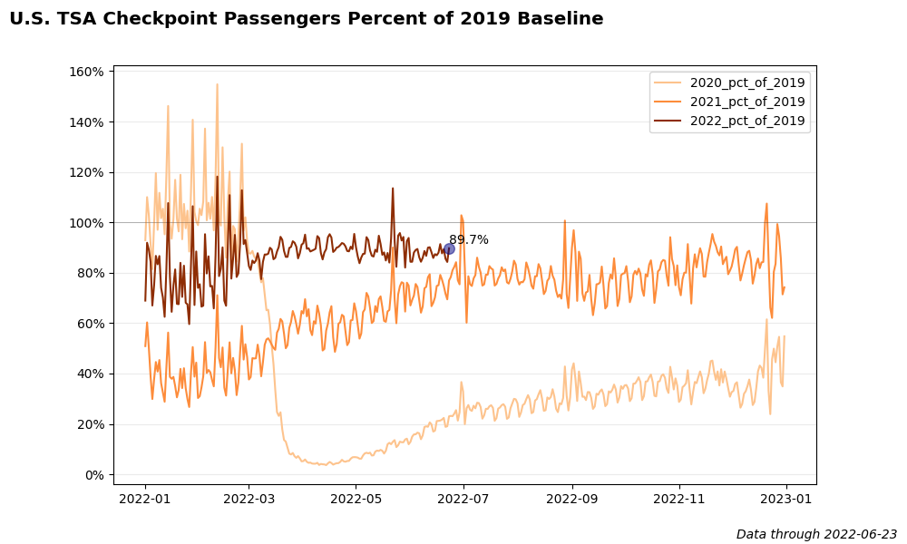
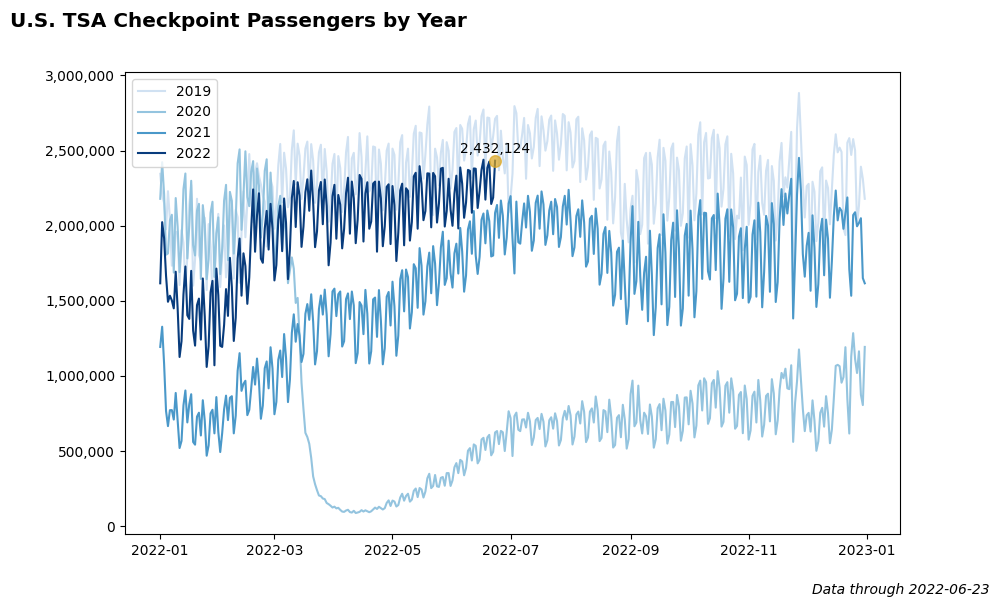
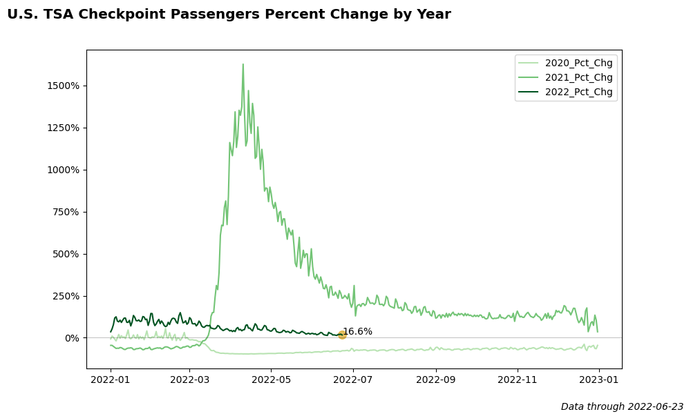
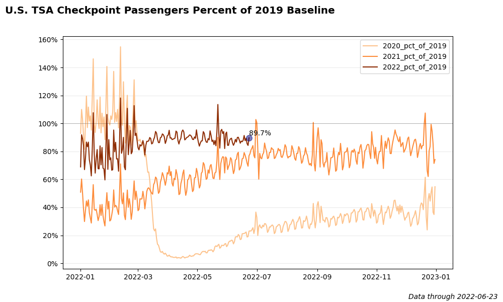

At the start of the Covid-19 outbreak, the U.S. Transportation Security Administration began sharing TSA security checkpoint passenger throughput numbers.
Below are several plots created with Matplotlib showing the trend of TSA passengers through the pandemic. The code for these charts is stored on GitHub here.
 




